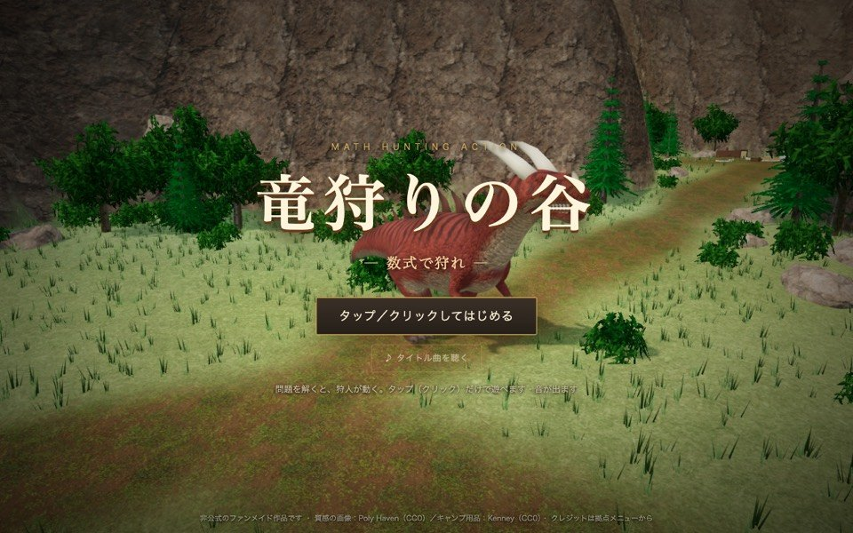
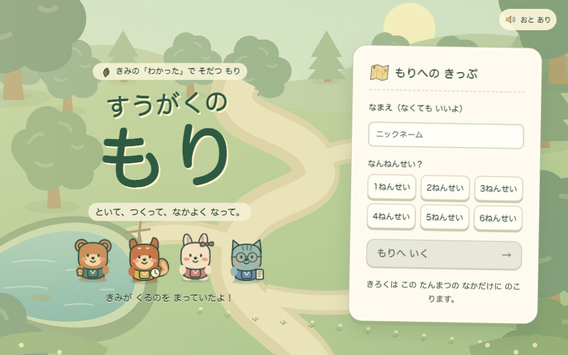
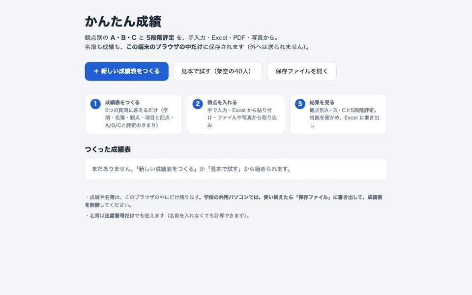
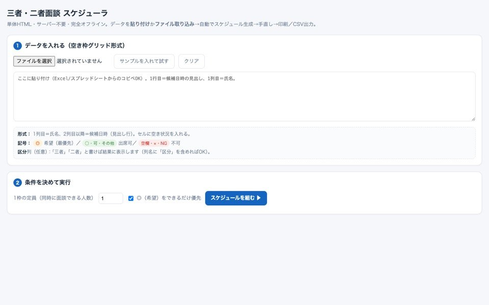
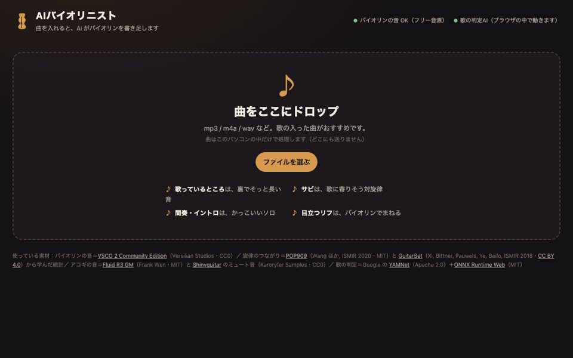

2026年10月31日 更新
wish
このページに込めた想い
- だれかの「困り感」を、解決したい。
- 教育の現場を、変えたい。
- だれかに、感動を届けたい。
とはいえ、自慢できるような道を歩いてきたわけではありません。
中学の部活で、人を信じられなくなりました。それから長いあいだ、心に仮面をかぶって過ごしました。教員になった一年目は、授業も学級も、なにもうまくいかず、うつと診断されました。
それでも、いまは自信を持って言えます。生きていて良かった。もっと生きたい。困っている人を助けたい。感動を届けられる人になりたい。
エリートなんかではありません。生きることすら不器用な一人の人間が、必死にもがいてきた足跡を、ここに残しておきます。だれかの勇気になれたら、うれしいです。
activities
いま、していること
ばらばらに見えますが、根っこはひとつ。「困っている人の隣で、つくること」です。
try
よかったら、さわってみてください
どれもブラウザでひらけます。生徒と、先生と、音楽が好きな人に。
- 中学生と 数学ラボ3 空に浮かぶ天文台で、数学の「わかった」を光に変えて進む学習RPG。中1〜中3。 あそんでみる
-

中学生と 数学ハンター 数式を解いて狩りをし、村を復興する冒険RPG。スマホでも遊べます。 あそんでみる -

小学生と すうがくの森 算数をとくと、森のキャンプがにぎやかになる。1日10分で「きょうはここまで」。 あそんでみる -

先生に かんたん成績 成績つけの手間を、少し軽く。名簿も成績も、パソコンの外には出ません。 つかってみる -

先生に 面談スケジューラ 希望を貼りつけるだけで、面談の日程を組みます。ネットにつながなくても動きます。 つかってみる -

曲をつくる人に AIバイオリニスト 曲を入れると、AI がバイオリンのパートを書き足します。曲はブラウザの中だけで処理されます。 つかってみる
future
これから、したいこと
教育の現場に、革命を起こしたい。
といっても、一人でたくさんつくり続けることではありません。
教室で、職員室で、もう小さく起きている「こうしたら楽になった」を、ほかの先生にも渡せる形にする。それが使われて、直されて、持ち寄られていく。その流れをつくりたいと思っています。
その最初の入口は、だれかの小さな困りごとです。
request
あなたの「困り感」を、聞かせてください。
「これ、もう少し楽にならないかな」。そんな困りごとを、いっしょに考えて、使える形にしてお渡しします。いまは無料でお受けしています。